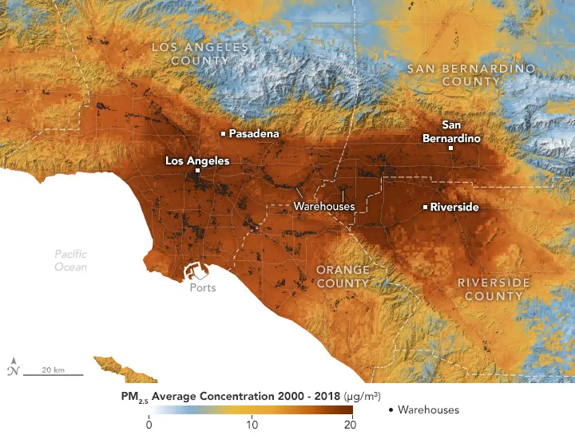

Images of the day

Water For A Desert Lake In Algeria
Scientists are studying the rare filling of Sebkha el Melah for clues about past - and possibly future - greening of the Sahara desert

Madagascar's Betsiboka River Delta
The growing network of channels and islands now spans more than half of the estuary that was once open to ships
Where Warehouses Are Built, Air Pollution Follows
Now research shows that the presence of warehouses in the Los Angeles area is associated with higher levels of airborne particulate pollution